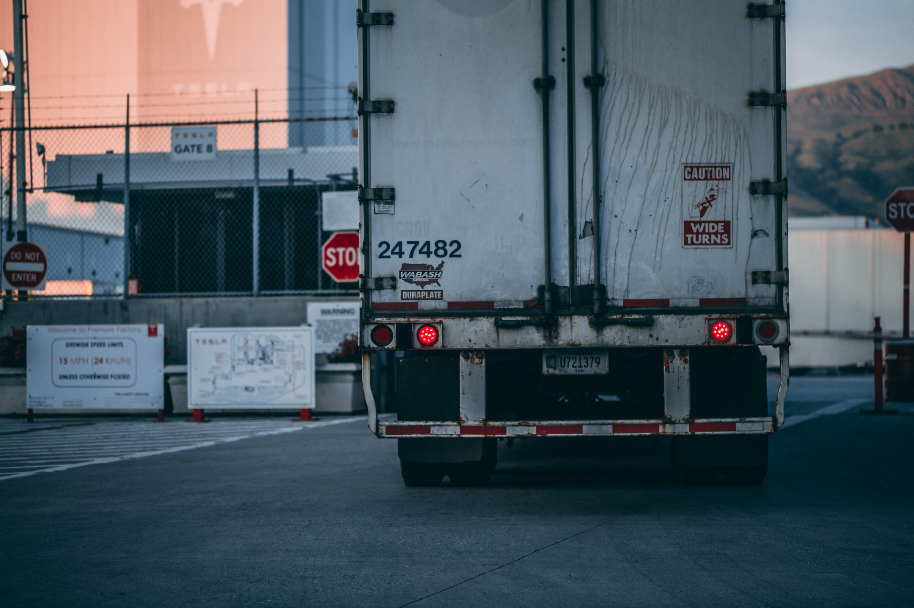

- Home
- LTL Waste Management
LTL waste management for every terminal.
IWC is the waste broker built for LTL carriers. One contact for every location, every hauler bill checked, and compactors that cut the number of pickups you pay for.
How brokerage works
You call one number. We handle the rest.
Most carriers deal with a different hauler, contract and bill at every terminal. IWC stands in the middle so your team only deals with us.
Your side
Every terminal
Dozens or hundreds of locations, each with its own trash needs.
In the middle
IWC
One contact, one contract, one monthly invoice. We set up service, solve problems and audit every bill.
Local side
The right hauler
We find and manage the hauler in each market and hold them to the service you are paying for.
What is included
Everything your terminals need.
01
Invoice auditing
Waste bills are easy to get wrong. We check every hauler invoice against the service you agreed to before you pay it.
- Missed or extra pickups flagged
- Fuel and environmental fees reviewed
- Credits chased down for you

02
One invoice and one report
Every terminal rolls into one monthly invoice, with a report that shows service and cost by location.
- One bill for accounting to process
- Cost by terminal, side by side
- Easy to spot a location that is off
03
Compactors that cut pickups
At busy terminals the biggest cost is how often the truck comes. A compactor packs the same trash into far fewer hauls.
- Rented, installed and serviced by IWC
- Sized to each terminal's volume
- Also available to buy
The compactor savings model
Fewer hauls for the same trash.
You pay for every pickup. A compactor squeezes trash down so each haul carries much more, and the hauler comes far less often.
Open top hauls
4 to 5
Compactor haul
1
Savings estimate
Fewer pickups. Lower bills.
Most terminals pay for every pull. A compactor packs the same trash tighter, so the hauler comes less often. Move the sliders to compare.
- Busy terminals see the biggest drop
- One rental covers install and service
- Free invoice review before you commit
Getting started
Three steps. One invoice.
-

We look at every terminal
Send us your current invoices. We map service, pickups and cost at each location.
-
We place the right equipment
Compactors where volume is high, the right container everywhere else. We handle install.
-
You get one invoice + report
Every terminal, every hauler, one bill. We audit it first and flag anything off.
Questions
Common questions.
Do not see yours? Call 662-416-4888, Monday to Friday, 8am to 5pm.
What does a waste broker do?
A waste broker manages trash service for you. We arrange haulers in each market, handle problems, check every bill and send you one invoice for all locations.
Do you only work with LTL carriers?
LTL terminals are our specialty. We know how docks run, what they throw away and what service they actually need.
Can you cover terminals in different states?
Yes. IWC manages service coast to coast from our office in Booneville, Mississippi.
Do we have to buy a compactor?
No. Most clients rent, which includes install and service. Buying is also an option.
How do we start?
Send a recent invoice from each terminal. We review them for free and show you where pickups and cost can come down.

Free savings review
Find out what your terminals could save.
Send a recent invoice. We will show you where pickups and cost can come down, at no charge.